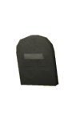
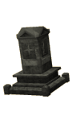
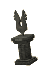
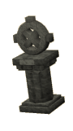

")
Death in RuneScape
What happens when my character dies? | Will I lose my items? | Can I get my items back? | Upgrading your gravestone | Gravestones in free worlds
What happens when my character dies?

This isn't something to be too afraid of, as your character will always 'respawn' in perfect health (although probably missing a few items; more on that later).
If you are a relative newcomer to RuneScape, you will visit the home of the Grim Reaper when you die. This is nothing to worry about: The Big GR is surprisingly friendly and will give you pointers about dying and what to expect when it happens. At all other times, when your character dies, you will respawn in the grounds of Lumbridge Castle. By completing quests, members will be able to move their respawn location to somewhere more convenient, depending on their needs.
- To respawn in Falador, complete the Recruitment Drive quest.
- To respawn in Camelot, complete the King's Ransom quest.
- To respawn at Soul Wars, complete the Nomad's Requiem quest.
Will I lose my items?
Normally, when your character dies, you are only allowed to retain your three most valuable items. Be aware that an item's value is decided by the game, not the market value. Any other items you are carrying will drop on the ground where you died.
To find out which items you will keep, you can look at your 'Items kept on death' interface. Read the Controls - Inventory article to find out more about this feature.
Any items you drop when you die will be invisible to other players, protected by a gravestone (see below) for a certain amount of time.
|
Abyss/PK skull |
There are exceptions to keeping three items that you should be aware of: being 'skulled' when you enter the Abyss, or being 'skulled' when you log in to a PvP or Bounty world. In the case of the Abyss and PvP or Bounty Worlds, you will lose ALL of your items. In the case of a +1 item Bounty World (check the Themed Worlds page to find a comprehensive list of these worlds) you will keep your highest value item when you die.
If your Prayer level is high enough, you will be able to use the 'Protect Item' prayer to hold onto one extra item when you die. So, if you die normally, you will be able to retain four items, and if you were skulled by the Abyss, you will hold onto one item. You will not be able to use the 'Protect Item' prayer in any PvP or Bounty Worlds.
Can I get my items back?
If you die in a special area, such as certain times in quests, your gravestone will appear next to the entrance to that area, giving you a chance to collect your items without having to worry about being killed again.
As your time runs out, your gravestone will begin to crumble. A friendly player can fix up your gravestone by right-clicking and selecting 'Repair'. They need to have a Prayer level of 2, and this will hold your gravestone in place for another five minutes at a cost of about 5 Prayer points. If the player repairing your gravestone has less than 5 Prayer points, it will not remain as long.
 Alternatively, a player may choose to 'Bless' your gravestone, imbuing it with the strength of their faith to keep it in place for up to an hour. This requires a Prayer level of 70 and will cost the player blessing it as many Prayer points as it requires. This will never take their Prayer points below 10 (just in case they need them!).
Alternatively, a player may choose to 'Bless' your gravestone, imbuing it with the strength of their faith to keep it in place for up to an hour. This requires a Prayer level of 70 and will cost the player blessing it as many Prayer points as it requires. This will never take their Prayer points below 10 (just in case they need them!).
The length of time your gravestone remains in place depends on how many Prayer points the player blessing your gravestone has available and how long it has been since you died. Note that, regardless of when the gravestone was blessed, it will crumble to dust one hour after you died. It will also collapse if you die again and drop more items, although your items may remain available for a while longer if your gravestone has been repaired or blessed recently. If you lose your connection or log out, your gravestone will continue to count down.
To make it easier to get to your items when you return, you (and only you!) can right-click on your gravestone and select 'Demolish'. This won't make your items vanish immediately, so you should still be able to pick them up before they despawn.
Upgrading your gravestone
To change your gravestone you'll first need to complete The Restless Ghost. If you've done that, you can speak to Father Aereck in Lumbridge Church and offer a small donation to one of his charities for the following options; the more expensive gravestones will protect your items for longer before collapsing, as you can see in the 'Duration' column.
Note that the type of gravestone you have will not increase the length of time repairing or blessing it holds it in place.
You will retain your gravestone style until you buy a new one.
| Style | Cost | Duration | Style | Cost | Duration | |
 Memorial Plaque |
None | 3 minutes |  Flag |
50 coins | 3 minutes | |
|  Small Gravestone |
500 coins | 3 minutes |  Ornate Gravestone |
5,000 coins | 4 minutes |

| Style | Cost and Requirements | Duration | Style | Cost and Requirements | Duration | |
Memorial Plaque |
None | 3 minutes |  Font of Life |
50,000 coins | 5 minutes | |
|  Stele |
50,000 coins | 5 minutes |  Symbol of Saradomin |
50,000 coins | 5 minutes | |
 Symbol of Zamorak |
50,000 coins | 5 minutes |  Symbol of Guthix |
50,000 coins | 5 minutes | |
 Symbol of Bandos |
50,000 coins Land of the Goblins |
5 minutes |  Symbol of Armadyl |
50,000 coins Temple of Ikov |
5 minutes | |
|  Ancient Symbol |
50,000 coins Desert Treasure |
5 minutes |  Angel of Death |
500,000 coins | 6 minutes |
Will my gravestone work on a free world?
Yes! Your gravestone will look the same even when playing on a free world. Because many people there will not have access to the same range of styles, you'll be able to spot your gravestone even more easily in an area littered with the bodies of the slain.

More articles in
How do I get started?
|
|